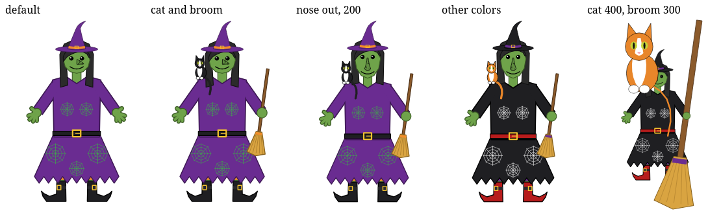
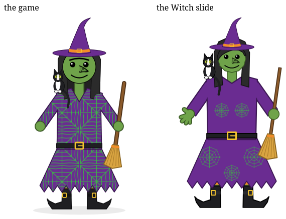
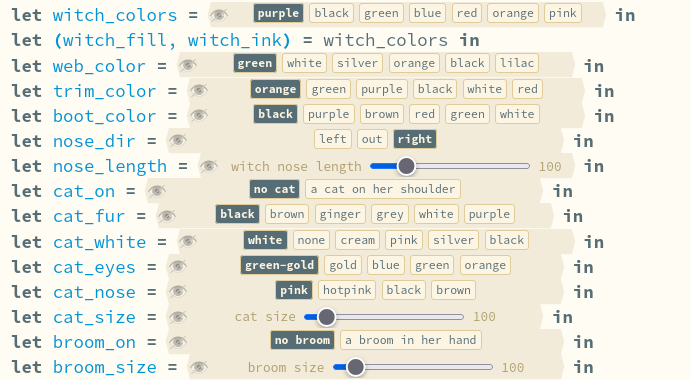
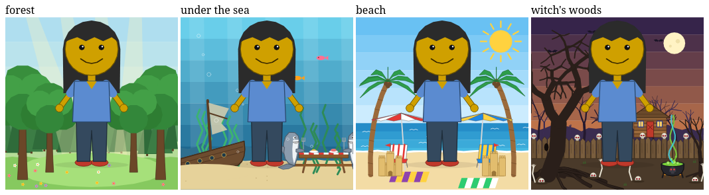
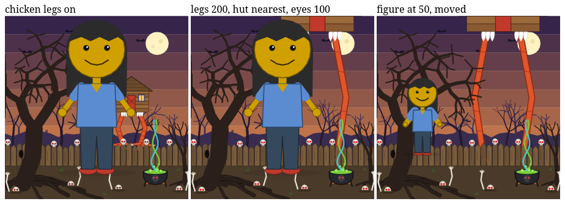

Hazel reports · ^report(4) · 2026-10-11
The witch and her woods, ported to Hazel
M's witch went into Messed Up Dress Up first (^report(3)). Now she is a slide in the Livelit Playground, on branch #2635 (livelits × modular editors), kept in step on #2597 (user-defined livelits). Her woods and three more of the game's backgrounds followed, as a Scenes slide. This report covers what the two slides do, two layout bugs the port turned up, and what a redraw costs, with a first look at why the woods cost so much.

Update, 2026-10-12: the picture's view, made cheaper, and a correction. The woods' remaining cost was not per shape, as said below, but per point, and in copies. Three changes since: the frame now sets the picture's box; the points strings are cheaper; and a typed value is no longer copied at every boundary it crosses. Moving the figure in the woods now redraws in a median of 1.41 s, down from 2.20 s. The details.
The Witch slide
The slide starts from Full Body's figure: the same hair, head, eyes, mouth, arms and hands. It adds the witch's own controls and pieces. As in the game:
- Her hat and dress share one color, purple to start. The dress has long sleeves, a ragged hem and a spider web, in green to start. Seven dress colors and six web colors.
- An orange trim on the hat's band and in her striped stockings. Below are a belt with a gold buckle and pointed boots, each with a buckled strap.
- The witch nose points left, out or right, at any length from 30 to 400. It is filled a shade darker than her skin, and its warts grow with it. The mouth moves down to clear it.
- A tuxedo cat on her shoulder, off to start. Its fur, its white (or none), its eyes and its nose each have a color choice, and its size runs 10–1000%.
- A broom through her right hand, off to start, sized 10–1000%. The hand holding it closes round it.
- The skin starts at witch green (next section).
Every piece is a polygon or a path, because those are the only shapes the slides' Drawing library has. Each piece is placed by the figure's own anchors: hips, feet, neck, the hand at the end of the arm. Two passes over the finished picture recolor it. One turns the shirt's blue into her dress color. The other turns the usual skin and its outline into the chosen skin. The pieces stack in the game's order, so a raised arm still crosses in front of her face and the broom hand goes on last.

Try it: the Witch slide. Switch the outline to 🖼️ to see only the GUIs.
Skin, as swatches
The game's skin colors include five that mean something, each marked with a face: 😀 smiley yellow, 😡 mad red, 🤢 sick green, 👽 alien grey and 🧙 witch green. The Full Body slide gained a skin choice earlier today, one button per skin, as a ^choice.
Ten skins were too many for it. A ^choice's width is a number in its definition, sized for about seven short buttons, and that number cannot depend on the choices passed in. The row of ten spilled past both ends of its box, and the code drawn beside it covered the first button. Pressing "peach" pressed the code instead, and the picture never changed. The redraw script found this. Every other press redrew in 5–7 s, and "peach" never did, even after 60 s.
The skin is now its own small livelit, ^skin. It shows one swatch per skin, in that skin's color, as the game does, in a box wide enough for all ten. The faces became words: smiley, mad, sick, alien, witch.


Labels that fit
The witch's choices first had two-word labels: "green web", "orange trim", "nose points left". Each ^choice is one line tall. The labels wrapped to two lines, and the box cut off the second, so "nose points left" read as "nose points". The labels are now one word each. The name on each line (web_color, trim_color, nose_dir) already says what the choice is for.


Both bugs come from the same place. A livelit's box is a fixed width, one line tall, and nothing reports when its view overflows the box. A script now checks every button on these two slides: each sits inside its box, and nothing covers it. Full Body still has five shoe labels that wrap, such as "alien 4 toes". That fix is next.
The Scenes slide
Four of the game's backgrounds, with all their sliders: the forest; under the sea, with the sharks at their picnic table, forks in their fins; the beach; and the witch's woods. A paper doll in the game's usual look stands in for the figure. The slides before this one draw the real figure, and drawing it here would make every redraw pay for both. Three sliders size the doll about its feet and move it across and up or down the stage.

The woods have the game's newest controls (^report(3)):
- Chicken legs under the hut, off to start, as M wants them, with their size (20–300%).
- Hut nearer: the hut comes down toward the fence and grows, and always stays behind it.
- The skulls' red eyes: how much of each eye hole they fill. Their blink rate is a slider too, but a slide's picture holds still. So the slide answers it as the seconds between blinks.

Some things are approximated, as agreed before the port:
- Circles and curves are polygons.
- The game's gradients are 6–8 bands of color.
- See-through colors, such as the sunshafts and the light under the sea, are 8-digit hex.
- The stage is 600 by 601 here; the game's is 812 by 601. So it fits the picture's 320 by 440 without leaving most of it empty.
- Everything is kept on the stage, so the frame holds still. A hut pushed past the top, on long legs and as near as it comes, is flattened against the edge. The game cuts it off (the middle picture).
Try it: the Scenes slide.
The slide's webs, back in the game
I liked the slide's few webs better than the game's web all over the dress. So the game now offers both for the witch:
- "all over", as before and still the default;
- "a few webs", drawn as the slide draws them: two on the bodice and three on the skirt, each with eight threads and three rings.

What it costs
The Witch slide
| Change | Witch slide | Full Body slide | Game draw() |
|---|---|---|---|
| Load, to the first picture | 14.5 s | 14.7 s | |
| Skin: mad red; peach; witch green | 6.5 s; 6.2 s; 5.0 s | 4.1 s; 3.3 s; 3.4 s | ~1 ms, the witch with her cat and broom (3 ms on the beach) |
| Cat on; broom on | 6.9 s; 6.6 s | ||
| Nose out; nose length 100 → 200 | 6.2 s; 6.2 s | ||
| Dress, web, trim, boot and fur colors | 6.2–7.3 s | ||
| Cat size 100 → 400; broom size 100 → 300 | 6.1 s; 7.5 s |
Every change to the witch costs about the same, 5–7.5 s, whatever it changes. A skin press costs about 2–3 s more on the Witch slide than on Full Body, though the Witch slide is shorter (2,189 lines against 2,896). So the extra time comes from what the witch adds, not from the slide's length. Which part of it is not known yet: this slide hasn't been profiled.
Since the three fixes below (the worker's slices, reuse and the view's memo), the same changes take about half as long, single runs again:
- The witch: 2.2–4.5 s; she loads in 12.9 s.
- Full Body's skin presses: 1.8, 1.5 and 1.6 s.
- Kids' Choice: a release still takes about 0.13 s, a median of 130 ms over 12.
These are single runs, one per change, so read them as sizes rather than precise numbers. Earlier reports saw a few tenths of a second between runs of the same change.
The Scenes slide
| Scene | Shapes | Points | Switching to it | Moving the figure (size 100 → 90 → 100 → 90 → 100) |
|---|---|---|---|---|
| Forest | 164 | 1,242 | 6.3 s | 5.5, 3.5, 3.6, 3.7 s |
| Under the sea | 149 | 1,025 | 5.4 s | |
| Beach | 181 | 895 | 5.0 s | |
| Witch's woods | 570 (614 with legs) | 2,558 (2,702) | 12.0 s | 15.5, 10.0, 12.0, 10.9 s |
In the woods, each slider took 16.5–21.2 s, one run each: chicken legs on, leg size, hut nearer, eye size, and the figure's size and place. The slide takes 23.5–26.3 s to load. The game draws a scene in about 3 ms.
The woods cost about three times as much as the other scenes, even when only the figure moves. Resizing the figure in the woods takes 10–15.5 s; in the forest it takes 3.5–5.5 s. So a redraw costs what the whole picture costs, not what changed. The woods have 3.7 times the forest's shapes and 2.2 times its points. In every series, the first change after loading is the slowest.
Three experiments on the woods
| Variant | Shapes | Points | Moving the figure, four runs |
|---|---|---|---|
| As first built: the scene and the figure kept on the stage together | 570 | 2,558 | 18.0, 10.3, 13.2, 11.2 s |
| The scene and the figure kept on the stage apart (kept) | 570 | 2,558 | 15.5, 10.0, 12.0, 10.9 s |
| Each dead tree drawn as one line per fork level, retracing its limbs | 372 | 3,416 | 18.3, 12.0, 14.4, 14.0 s |
| The view's call memo keeping 1,024 calls per helper, not 8 (an engine change, not kept) | 570 | 2,558 | 17.8, 11.5, 10.2, 10.6 s |
- Kept apart: within the noise. It stays, since it is no slower and moving the figure no longer touches the scene.
- Fewer shapes with more points: slower, so points cost at least as much as shapes. It was reverted.
- The memo: no measurable change; see the lessons below.
Where a woods redraw goes
A profile of two figure-size changes in the woods, on the first build. Each change splits about evenly between the eval worker and the page:
- The worker: about 60% evaluating the program, and about a third encoding the result for the page.
- The page: about half evaluating the
^picture's view. That is the Hazel code that turns each of the ~600 shapes into an SVG element. The rest is redrawing.
Profiled times run longer than real ones: these two changes took 14.8 and 19.7 s under the profiler, against 10–15.5 s without it. Read the split as shares, not times.
The worker's timeline, and a fix
A message timeline of the woods followed, as in ^report(1). It covered the page's posts to the eval worker and the worker's replies, with their sizes and times. The worker logged, per request, how its time went and what it reused; that logging was temporary. Two figure-size changes, two eye-size changes, then the same in the forest:
- The worker was idle more than half the time. A woods change took the worker about 10 s from request to result. Only 3.9–4.4 s of that was evaluating; 5.8–6.2 s was between slices.
- The worker evaluates in slices of 5,000 trampoline steps, about 3 ms each, so a change was 1,292 slices.
- After every slice it yielded to its event loop with a
setTimeout. Browsers clamp chained timeouts to about 4 ms each. - Loading the slide had the same shape: 5.7 s between slices in a 10.4 s evaluation.
- Nothing big was reused. Every change in the woods took exactly 610,670 evaluation steps, the same count as the first load, whether it moved the figure or changed the woods. 130 nodes came from the cache, and they saved no steps. Of the failed reuse checks:
- 428 found no cached entry;
- 199 found a variable the code reads whose source had changed;
- 18–30 found a changed elaboration.
- Then the page. The result was about 1 MB. After it arrived, the page took 5.7–6.6 s to redraw a picture it had not drawn before. Going back to one it had drawn took 0.6–1.1 s.
Fixed: the worker now runs slices back to back for up to 30 ms before it yields (#2635 25e515536d, #2597 74f8056646). A new request still gets in within those 30 ms.
- The worker per woods change: 10.0–10.7 s down to 2.1–2.6 s. Evaluating takes 1.8–2.1 s and the gaps between slices 0.23–0.26 s.
- Loading the Scenes slide: 23.5–26.3 s down to 17.2–17.4 s.
| Moving the figure, four runs | Before | With the fix |
|---|---|---|
| Witch's woods | 15.5, 10.0, 12.0, 10.9 s | 9.4, 3.6, 4.2, 5.0 s |
| Forest | 5.5, 3.5, 3.6, 3.7 s | 3.6, 1.6, 2.4, 2.0 s |
Kids' Choice, ^report(1)'s slider, is unchanged: release to face has a median of 138 ms over 12 releases. On that slide the worker is not on the face's path.
On #2597, which lacks #2469's speedups, the Scenes slide takes about 5 minutes to draw its first picture, with or without the fix (297 and 301 s). The page is too busy even to answer a script. The Witch slide takes 172 s there. That is the main thread, not the worker.
Later on 2026-10-12: still true, measured again cold (Scenes 287.5 s, Witch 173.1 s), and now explained in ^report(7). On #2597 the page runs a full update for every partial result the worker streams, re-projecting the whole program each time, and the worker streams after every slice. One commit from #2469, c07bdacead, brings Scenes to about 17 s and Witch to about 19 s in a copy of #2597.
Why nothing was reused, and a fix
The next question was which variable broke reuse. The worker logged, again only for this, every top-level binding it evaluated again, and why its definition's reuse check failed. Followed back from the woods, the chain started at the top of the slide:
- The
Drawinglibrary was never reused. Its check found variables with no source at all:grow_all,bounds,coords,shape_nodesand the rest of its own recursive helpers. - Every control reads
Drawing(Drawing.^slider,Drawing.^choice). So every control was evaluated again, and everything that reads a control after it. - The woods' own function failed the same way, on
grow, its dead trees' recursive helper.
The cause is in statics, which works out each expression's free variables, the ones the reuse check compares. A recursive function is compiled into a fixpoint that binds its own name. Statics already dropped that name from the fixpoint's free variables, with a comment saying that leaving it in breaks reuse. But the let around the fixpoint still took its definition's free variables whole, so the name leaked into every expression around it. A slide's library is such an expression, and every slide has one.
Fixed (#2635 4b964e6660, #2597 a1a148278e): a recursive let's free variables drop the names its fixpoint binds.
- What's left to evaluate: after a figure-size change, the worker now re-evaluates 5 bindings, the figure and what reads it. Before, it was everything after the library.
- Tests: two new tests reuse a module with a recursive member, and a function with a recursive helper inside, after an unrelated edit. Both fail without the fix.
- Suite: the full test suite has the same 9 failures with and without it.
- Upstream:
devhas the same code, so it has the same bug.
| Woods, each change a new picture, four runs | Without the fix | With it |
|---|---|---|
| Figure size (the woods unchanged) | 8.4, 9.9, 9.0, 10.7 s | 6.5, 6.1, 7.3, 6.2 s |
| Skull eye size (the woods changed) | 8.3, 10.2, 8.8, 10.3 s | 8.3, 10.2, 9.2, 10.7 s |
Moving the figure saves about 3 s. Changing the woods saves nothing, as it should: the woods must be evaluated again. Going back to a picture the page has drawn before now takes about 1 s: 0.95–1.07 s in the woods, 0.64–0.78 s in the forest. What is left for a new picture is mostly the page drawing it.
The view's memo cost more than it saved, and a fix
With the worker reusing the woods, a profile of two new-picture changes put almost all of the time on the page, in the ^picture's view. A third of the view was the call memo's own work: computing each call's key, which puts every value the function reads in canonical form and hashes it, and looking it up.
The memo keeps 8 calls per function, which suits Kids' Choice's few helpers. The picture's view calls its shape helper once per shape, about 600 times. So it missed on every call and still paid for every key.
| Woods, figure size, each picture new, four runs | Release to redraw | Kids' Choice, median of 12 |
|---|---|---|
| The memo as it was | 6.5, 6.1, 7.3, 6.2 s | 125 ms |
| Keeping 1,024 calls per function, not 8 | 10.3, 9.0, 9.7, 12.2 s | |
| The memo off | 2.4, 2.4, 2.6, 2.9 s | 167.5 ms |
| The memo giving up on a function that keeps missing (kept) | 3.5, 3.2, 2.6, 3.3 s | 130 ms |
A bigger memo was slower, since a lookup scans the stored entries. With the memo off, the woods were fast but Kids' Choice lost the 40 ms the memo was made to save.
Fixed (#2635 126f595ce9, #2597 498cf299ea): once a function has missed 24 times for each time it hit, it is no longer looked up or recorded. A function that hits stays memoized.
- The woods: about as fast as with the memo off. Changing the woods themselves went from 8.3–10.7 s to 5.2–6.4 s.
- Kids' Choice: keeps its reuse.
- Test: a new test checks that a function whose every call is new stops being looked up while one that hits is still reused. It fails with the rule turned off.
Tried after, and not kept: letting the memo keep each shape's call.
- The change: entries found by hash in a table, thousands per function. Misses counted only after a function's first evaluation. Each shape's box computed by a call of its own.
- It worked as far as it went: 72% of the view's lookups hit.
- But the gains were small: moving the figure 2.2–3.4 s (within the noise), changing the woods 5.0–5.1 s rather than 5.2–6.4 s. Loading was about 1 s slower.
- So it stayed out. The patches are kept with this report's sources.
Where the view's remaining second or so goes is the next question. In a profile, computing keys was about a sixth of the page's time and evaluating about a third.
The view's casts, and a fix
A new profile of the picture's view showed type work that has nothing to do with drawing.
- Unrolling
Html: every Html node a view builds carries theHtmltype. Each time, the evaluator unrolled that recursive type of 47 constructors again, substituting through all of it: a sixth of the page's time in the woods. - An uncached check: a check on each bare constructor was redone every time, while its neighbour's was cached. Another 5%.
Fixed (#2635 efaaee244f, #2597 abadface30): unrolling is remembered per type, and the check is cached by hash like its neighbour's.
- Woods, figure size, each picture new: 3.5, 3.2, 2.6, 3.3 s → 3.1, 2.0, 2.1, 2.7 s.
- Woods, eyes: 4.9–6.2 s.
- Forest: 1.0–1.8 s.
- Kids' Choice: a median of 125.5 ms.
The view's remaining time is not its per-point work. With coords writing only each shape's first point, about 600 points instead of 2,700, the times did not move: 2.9, 1.7, 2.4 and 2.5 s. What is left is per shape: building each shape's Html node and its attributes, for all ~600 shapes on every change.
Update, 2026-10-12: not so. The Html nodes are about 3% of the view's evaluation steps. Most of the rest was per point, in two places. The view's box walked every point, all of them even in this experiment, which is why the times did not move; and so did the points strings. The view also copied the picture each time it was passed to a typed function. Below.
Earlier lessons, checked against this slide
- The worker reuses what did not change (
^report(1)). Moving the figure leaves the scene's code and its inputs as they were, so the woods should come from the cache. They weren't: every change evaluated all 610,670 steps again, because a recursive helper's name leaked out of itslet(above). Fixed, a figure-size change now re-evaluates only the figure. - A view re-evaluates only the calls whose inputs changed (
^report(1)). This was made for Kids' Choice, whose face is a few helper calls, and it keeps the last 8 calls of each helper. The picture's view calls its shape helper about 600 times. Keeping 1,024 calls didn't help. What did was giving up on a function that keeps missing (above). - Profiled times overstate code made of many small calls (
^report(1)). It held here too, as the note above shows. - A trap in the measuring harness. Timed in node, incremental evaluation came out 7–15 times slower than fresh on Hands and Eyes.
- The test re-ran statics from scratch, which gives the elaboration new ids. So the reuse check could not match terms by hash, and compared them in full: every subterm, walked again for every node it checked.
- The page's statics are incremental, and the worker's profile shows no such walk. So this is the harness, not the app.
- But whenever ids do change, the check can cost the square of the program's length.
Update, 2026-10-12: the picture's view, made cheaper
Counted under node, by kind of step and by part of the view, then timed on the page. The woods' picture has 570 shapes and about 2,560 points. Its view took 238,781 evaluation steps:
| Part of the view | Steps | Share |
|---|---|---|
The box (view_box): every point, to find the bounds | 134,320 | 56% |
The points strings (coords) | 92,703 | 39% |
| The Html nodes and their attributes | about 6,600 | 3% |
Three changes followed, each measured before and after. They are on #2597 and #2635, and the third is also a dev PR, #2679:
- A frame sets the box. Most playground pictures already had a
Drawing.frame, there so the box holds still. Now the box is the frame's, with the same margin, and the view no longer walks every point. Anything drawn outside the frame is cut off. The Witch's and Full Body's frames were raised to take in the hat and the hair as the slides open, so every slide opens with the box it had before. The view went from 238,781 to 99,621 steps. The redraw of a figure move went from a median of 2.20 s to 1.52 s, 8 changes each, with the same pictures. - Cheaper points strings.
to_fixedcalled directly, and a space after every point. Steps 99,621 → 74,055, but the view's own time only about 6% less, measured on one build: 26% fewer steps, 6% less time. Steps are not equal; see^report(6)'s update. - No copy at a typed boundary. Giving a value a type, as a typed parameter does, rebuilt the value, every list cell and tuple field, even when nothing inside changed. The picture was copied whole, 15,500 nodes, at
view_box(pic : Picture)and again elsewhere. The copies cost time and garbage, and, being new objects, they made the view's call memo redo its keys: about a quarter of the view on every redraw. Now a value that already has the type comes back as itself. The view on a move to a new size went from about 725–830 ms to 520–650 ms. Revisiting a size the view has drawn still takes about 210 ms, and Kids' Choice is unchanged. The whole redraw, in the same session, went from a median of 1.62 s to 1.41 s.
What is left of the view is the evaluator's own work, about 500 ms: variable lookups, pattern matching, fresh ids. That is the next target.
What next
- A fix for
dev: the same one-line statics change, with its two tests. - The page's redraw of a new picture, still most of a woods change: the picture's view builds an Html node for each of ~600 shapes on every change (above).
- #2597: the Scenes slide still takes about 5 minutes to draw its first picture there (281 s with all three fixes). That is the main thread, without #2469's speedups. Later on 2026-10-12: why, and a one-commit fix (287.5 → about 17 s), in
^report(7). - A cheaper
^pictureview: less work per shape, or an unchanged shape's SVG element reused. Done 2026-10-12, though the work was per point, not per shape (above). - A profile of a Witch slide redraw, to find where its extra 2–3 s over Full Body goes.
- Full Body's shoe labels, so they fit their line.
Since then: the shoe labels fit. A ^choice now wraps its buttons into rows and is as many lines tall as they take (#2635 af826fcb46, #2597 fc9cadab07). The page's side of a redraw, and how it compares with diffing the view in the worker, is ^report(5).
How these were measured
- Hazel: dev builds of #2635 on Matthew's laptop, in headless Firefox over WebDriver with a fresh profile per run.
- A script sets a slider (input and change events) or presses a button by its label. Repeated labels, such as "black", are pressed by their place in the slide.
- It then waits until the
^picture's SVG changes, up to 60 s. - The script used to look only for
^choicebuttons, so it now finds any button inside a livelit, the swatches included.
- Node: the slide tests' own evaluation, run once fresh and once incrementally after one literal changes, with a full GC before each, three changes per slide. This harness is not committed.
- The profile: the Gecko profiler in the same headless Firefox, two figure-size changes in the woods.
- The layout check: for every button inside a livelit, scrolled into view, its box against the livelit's box, and the element at its center.
- Game:
draw()plus a layout read (getBBox), the median of 30 runs per setting in the same Firefox. Firefox rounds its timer to 1 ms, so these are to the nearest millisecond. - Pictures: each slide's
^pictureSVG and the game's own SVG, rasterized in headless Firefox. The editor shots are of the same headless Firefox. - The numbers, for programs too: every table in this report, and what its numbers measure, is also in this page as JSON, in its
<script type="application/json" id="report-data">element, so a reader or an agent that fetches the page alone has the dataset. The same, with any raw files that survive, is in004/data/.